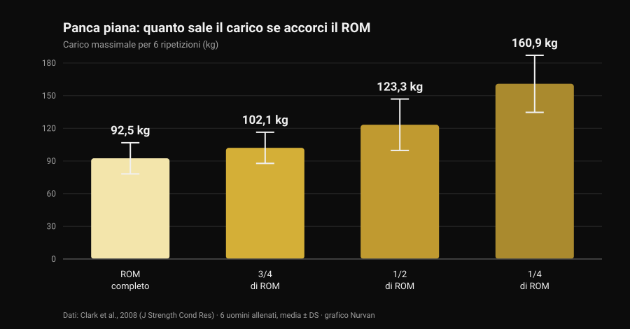
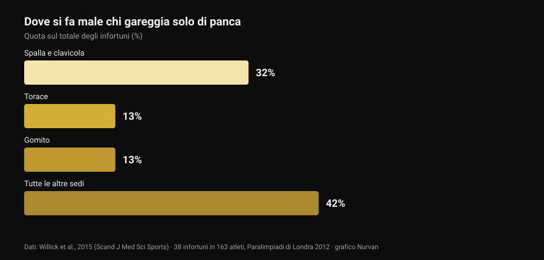

Bulldog grip in panca: cosa dicono gli studi
Un post tecnico passato nella mia bacheca spiega la presa bulldog in panca: polso ruotato verso l'interno, bilanciere di traverso sul palmo, promessa di meno tensione sul gomito e più stabilità. È una descrizione onesta, e parte della community la usa da anni. Poi sono andato a cercare quante volte quella presa è stata misurata in letteratura. Zero. Non è un motivo per scartarla — è un motivo per raccontarla come quello che è, e per usare i dati che invece esistono: quelli sul range di movimento e quelli su dove si fa male davvero chi fa panca.

In breve
- Nessuno studio indicizzato l'ha mai misurata. La ricerca su PubMed per "bulldog grip" restituisce zero risultati (verificato il 29 ottobre 2026): nessuna elettromiografia, nessun confronto di carichi, nessun dato su dolore o infortuni.
- La regola IPF non dice quello che si sente ripetere. Il regolamento tecnico in vigore dal 1° marzo 2026 chiede che "mani, pollici e dita impugnino completamente il bilanciere con una presa a pollice chiuso" e vieta la presa inversa. La parola "bulldog" non compare da nessuna parte.
- Accorciare il ROM alza i chili, non gli adattamenti. Il massimale per 6 ripetizioni passa da 92,5 kg a ROM completo a 160,9 kg a un quarto di ROM (Clark et al., 2008). Ma in dieci settimane di allenamento il ROM completo ha battuto tutti i parziali su ogni variante testata (Martínez-Cava et al., 2022).
- Il gomito non è il problema principale della panca. Nello sport che è solo panca, spalla e clavicola valgono il 32% degli infortuni, il gomito il 13% (Willick et al., 2015).
- Il gomito però conta di più dopo i 40 anni. Su 245 powerlifter, il tasso di infortunio a gomito e mano/polso aumenta in modo statisticamente significativo oltre i 40 anni (Siewe et al., 2011).
Cos'è la presa bulldog, in parole semplici
Nella presa che quasi tutti usano in panca, il bilanciere sta più o meno a metà palmo e l'avambraccio resta neutro. Nella presa bulldog ruoti l'avambraccio verso l'interno — quella che in anatomia si chiama rotazione interna, cioè il movimento che porta il pollice verso il corpo — e il bilanciere finisce appoggiato in diagonale sul palmo, vicino alla radice del pollice invece che al centro della mano.
Da lì discendono tre conseguenze geometriche, non sperimentali:
- il polso resta più "impilato" sull'avambraccio, con meno estensione forzata;
- il bilanciere poggia su un punto della mano più vicino al lato del mignolo, quindi tocca il petto leggermente più in alto;
- il gomito tende ad aprirsi un po' di più, perché la rotazione dell'avambraccio lo trascina.
Sono conseguenze plausibili, verificabili con un righello. Nessuna di loro è un risultato di laboratorio.
Quello che la ricerca non ha — e perché la cosa conta
Ho interrogato PubMed il 29 ottobre 2026: "bulldog grip" non restituisce nemmeno un lavoro. Sulla panca piana esiste invece una letteratura discreta sulla larghezza della presa — l'abbiamo passata in rassegna in presa in panca piana: larga, media o stretta — ma nessuno ha mai misurato la rotazione del polso: né l'attività dei flessori dell'avambraccio, né i carichi sollevati, né il dolore riferito al gomito.
Quindi l'affermazione "la presa bulldog riduce l'attivazione dei flessori del polso e allevia il dolore al gomito" è un'ipotesi meccanica ragionevole che nessuno ha mai testato. Chi la usa e sta meglio non si sbaglia sulla propria esperienza: riporta un dato personale, che vale per lui. Quello che non si può fare è trasformarlo in una raccomandazione generale e chiamarla scienza.
La regola IPF: cosa c'è scritto davvero
Qui circola l'equivoco più diffuso, e vale la pena leggere il testo invece dei riassunti. Il regolamento tecnico IPF in vigore dal 1° marzo 2026 elenca, fra le regole di esecuzione della panca, due vincoli sulla presa:
- mani, pollici e dita devono impugnare completamente il bilanciere, con il pollice chiuso intorno alla barra;
- la presa inversa è vietata, e la distanza fra gli indici non può superare gli 81 cm.
Il confronto illuminante è con lo squat, dove lo stesso regolamento scrive esplicitamente che "non è richiesto che i pollici avvolgano il bilanciere". In panca quell'eccezione non c'è: il pollice chiuso è obbligatorio.
Cosa se ne ricava? Che il regolamento non nomina la presa bulldog, e che una bulldog eseguita con il pollice chiuso e la mano piena sul bilanciere non viola nessuna di quelle due righe. Quello che fa scattare la luce rossa è altro: la presa senza pollice (la cosiddetta suicide grip), la presa inversa, gli indici oltre i riferimenti degli 81 cm e — questo riguarda da vicino chi spinge la rotazione all'estremo — una mano che sta sulla barra solo con i polpastrelli invece che impugnarla completamente.
Se gareggi, la conclusione pratica è semplice: mostra la tua presa all'arbitro in riscaldamento, non a metà della prima alzata. Le federazioni nazionali applicano lo stesso testo, ma il giorno della gara l'unica cosa che conta è quanto "completa" il singolo giudice considera la tua impugnatura.
Meno ROM, più chili: il dato che serve per leggere la presa
C'è un punto del discorso bulldog che si può invece ancorare a numeri solidi, ed è il range di movimento. Se il bilanciere tocca il petto più in alto a parità di larghezza della presa, l'escursione aumenta; se invece cambi anche la larghezza, l'escursione può accorciarsi. In entrambi i casi stai spostando una variabile che pesa parecchio.
Quanto pesa lo misura un lavoro del 2008: sei uomini allenati hanno testato il massimale per 6 ripetizioni in panca a quattro ampiezze diverse.

Dal ROM completo a un quarto di ROM il carico quasi raddoppia. Lo stesso andamento è confermato su un campione molto più grande: in 42 uomini allenati il massimale cresceva progressivamente passando da ROM completo a due terzi a un terzo (Martínez-Cava et al., 2019).
Il problema è cosa succede nel tempo. In uno studio randomizzato, 50 uomini hanno seguito dieci settimane di programma identico cambiando solo l'ampiezza allenata: il gruppo a ROM completo ha ottenuto i risultati migliori su tutte e tre le varianti di panca testate, e i gruppi parziali miglioravano sempre meno man mano che il ROM si accorciava (Martínez-Cava et al., 2022). Nel powerlifting paralimpico, dove la panca è l'unica gara, l'allenamento a ROM parziale permette carichi più alti con meno perdita di funzione a fine seduta, ma l'attivazione del grande pettorale — porzione clavicolare e sternale — è maggiore a ROM completo (Mendonça et al., 2021).
Tradotto per chi sta valutando la bulldog: se la provi e all'improvviso i chili salgono, prima di festeggiare controlla dove tocca il bilanciere. Se tocca più in basso perché hai allargato la presa, parte di quel guadagno è geometria. E vale anche il contrario, che il post originale segnala correttamente: a parità di larghezza, un punto di contatto più alto allunga l'escursione e rende l'alzata più dura, non più facile.
Il gomito: dove si fa male davvero chi fa panca
L'argomento più usato a favore della bulldog è il sollievo al gomito. Vale la pena mettere quel gomito in proporzione.

Il powerlifting paralimpico è, di fatto, uno sport di sola panca: è il campione più pulito che abbiamo per capire dove si rompe chi spinge. Su 163 atleti sono stati registrati 38 infortuni, il 61% da sovraccarico cronico. La sede più colpita è la spalla con la clavicola (32%); il torace e il gomito seguono a pari merito al 13%.
Il quadro negli altri sport di forza è lo stesso: la revisione sistematica di Keogh e Winwood indica spalla, zona lombare, ginocchio, gomito e polso/mano come sedi più frequenti, con circa un infortunio ogni 1.000 ore di allenamento nel powerlifting. Nello studio su 245 powerlifter tedeschi il 43,3% riferiva fastidi durante l'allenamento di routine senza interromperlo, e il tasso di infortunio a gomito e a mano/polso cresceva in modo significativo dopo i 40 anni (Siewe et al., 2011).
Due conclusioni pratiche. La prima: se il gomito fa male, la presa è una leva piccola accanto a carico, volume, frequenza e progressione — ed è lì che va guardato per primo. La seconda, più delicata: la rotazione interna spinta all'estremo chiude la posizione della spalla, e una revisione del 2024 indica proprio il posizionamento vulnerabile dell'articolazione durante l'alzata fra i fattori di rischio per la spalla negli sport con i pesi (Daher et al., 2024). Spostare un fastidio dal gomito alla spalla non è un affare: la spalla è l'articolazione che si infortuna di più.
Cosa dice davvero la ricerca
"La presa bulldog riduce l'attivazione dei flessori del polso e allevia il gomito" Zero studi indicizzati, nessuna elettromiografia. È un'ipotesi meccanica, non un risultato.
"Dà un punto di contatto più alto e un'apertura del gomito più naturale" La geometria regge: ruotando l'avambraccio il bilanciere si sposta verso il lato del mignolo. Quanto cambi davvero l'angolo del gomito non l'ha misurato nessuno.
"A parità di larghezza il punto più alto aumenta il ROM, quindi si fatica di più" È coerente con la relazione fra ampiezza e carico: più escursione, meno chili sulla barra.
"Ridurre il ROM è un vantaggio" Alza il carico in modo netto (da 92,5 a 160,9 kg fra ROM completo e un quarto), ma in dieci settimane di allenamento il ROM completo produce adattamenti maggiori su ogni variante.
"È vietata dall'IPF perché serve il pollice chiuso" Il regolamento 2026 non nomina la bulldog: vieta la presa inversa e chiede che mani, pollici e dita impugnino completamente il bilanciere. Una bulldog col pollice chiuso rispetta entrambe le righe.
"Aiuta i principianti che chiudono troppo i gomiti" Nessun dato su principianti, tecnica e presa. In più la spalla, non il gomito, è la sede che si infortuna di più in panca.
Come applicarlo
- Se non hai dolore e i numeri salgono, non cambiare per moda. La presa che usi da anni è anche la presa su cui hai costruito la tecnica: cambiarla azzera parte di quell'automatismo per qualche settimana.
- Se la provi, tieni il pollice chiuso e la mano piena sul bilanciere. È la versione che resta dentro il regolamento di gara ed è anche quella in cui la barra non può scappare.
- Misura il punto di contatto prima e dopo. Segna sul petto dove tocca la barra con la vecchia presa e con la nuova: è l'unico modo per sapere se hai cambiato la presa o hai cambiato il ROM.
- Dalle 3-4 settimane e un criterio numerico. Stesso carico, stesso numero di serie, stesso punto di contatto: se a parità di RIR (le ripetizioni che ti restano nel serbatoio) il carico non si muove, la presa non ti sta dando niente.
- Se il gomito fa male, guarda prima il programma. Salti di carico, troppe serie vicino al cedimento e nessuna settimana di scarico spiegano molto più della rotazione del polso. La logica di serie, recupero e progressione è in quante ripetizioni per la massa.
- Dolore che dura da settimane, o che ti sveglia la notte, non è una questione di presa. Quello è un tema da professionista sanitario, non da post.
- Se gareggi, chiedi prima all'arbitro. Trenta secondi in riscaldamento valgono più di qualsiasi didascalia letta online.
Prova Nurvan — se cambi la presa, lascia che siano i numeri a dirti se funziona
Un cambio di tecnica si giudica su settimane, non su una seduta: serve vedere carico, ripetizioni e RIR della stessa alzata uno accanto all'altro, con annotato cosa hai cambiato e quando. Su Nurvan registri ogni serie di panca con il RIR, aggiungi una nota sulla variante usata e ti ritrovi la curva dei carichi mese per mese — così la domanda "la bulldog mi ha fatto alzare di più?" ha una risposta e non un'impressione. In più le serie di riscaldamento vengono proposte in automatico sul carico del giorno, utile proprio quando stai riprendendo confidenza con una presa nuova.
Domande frequenti
Cos'è la presa bulldog in panca piana?
È una presa in cui ruoti l'avambraccio verso l'interno e appoggi il bilanciere in diagonale sul palmo, vicino alla radice del pollice, invece che al centro della mano. Il polso resta più allineato all'avambraccio e il bilanciere tocca il petto un po' più in alto. Non è una presa senza pollice: nella versione corretta il pollice resta chiuso intorno alla barra.
La presa bulldog è legale in gara IPF?
Il regolamento tecnico IPF in vigore dal 1° marzo 2026 non la nomina. Chiede che mani, pollici e dita impugnino completamente il bilanciere con il pollice chiuso e vieta la presa inversa: una bulldog eseguita con il pollice chiuso e la mano piena sulla barra rispetta entrambe le condizioni. Sono fuori regola la presa senza pollice, quella inversa e una mano appoggiata solo con i polpastrelli. Se hai dubbi, falla vedere all'arbitro prima di gareggiare.
La presa bulldog fa alzare di più?
Non esiste uno studio che lo abbia misurato. Se nei tuoi test il carico sale, la causa più probabile non è la presa in sé ma il range di movimento: a parità di tutto il resto, accorciare l'escursione aumenta molto i chili sollevabili, mentre un punto di contatto più alto con la stessa larghezza la allunga e rende l'alzata più dura.
La presa bulldog fa male alle spalle?
Non ci sono dati diretti. Quello che si sa è che la spalla è la sede più colpita in chi gareggia di panca (32% degli infortuni) e che fra i fattori di rischio documentati c'è il posizionamento vulnerabile dell'articolazione durante l'alzata. Una rotazione interna molto marcata va quindi provata con gradualità, e sospesa se compare fastidio alla spalla.
Leggi anche
- Presa in panca piana: larga, media o stretta? — cosa cambia davvero per petto e tricipiti al variare della larghezza, numeri alla mano.
- Panca o croci: cosa fa crescere di più il petto? — il confronto fra spinta e isolamento sul pettorale.
- Quante ripetizioni per la massa: il mito dell'8-12 — serie, recupero e progressione, cioè le leve che contano più della presa.
Fonti
- Clark RA, Bryant AL, Humphries B, 2008. An examination of strength and concentric work ratios during variable range of motion training. Journal of Strength and Conditioning Research 22(5):1716-9. PMID 18714211 · DOI 10.1519/JSC.0b013e318173c529
- Martínez-Cava A, Morán-Navarro R, Hernández-Belmonte A, Courel-Ibáñez J, Conesa-Ros E, González-Badillo JJ, Pallarés JG, 2019. Range of Motion and Sticking Region Effects on the Bench Press Load-Velocity Relationship. Journal of Sports Science & Medicine 18(4):645-652. PMID 31827348
- Martínez-Cava A, Hernández-Belmonte A, Courel-Ibáñez J, Morán-Navarro R, González-Badillo JJ, Pallarés JG, 2022. Bench Press at Full Range of Motion Produces Greater Neuromuscular Adaptations Than Partial Executions After Prolonged Resistance Training. Journal of Strength and Conditioning Research 36(1):10-15. PMID 31567719 · DOI 10.1519/JSC.0000000000003391
- Mendonça TP, Aidar FJ, Matos DG, Souza RF, Marçal AC, Almeida-Neto PF, Cabral BG, Garrido ND, Neiva HP, Marinho DA, Marques MC, Reis VM, 2021. Force production and muscle activation during partial vs. full range of motion in Paralympic Powerlifting. PLoS One 16(10):e0257810. PMID 34644331 · DOI 10.1371/journal.pone.0257810
- Willick SE, Cushman DM, Blauwet CA, Emery C, Webborn N, Derman W, Schwellnus M, Stomphorst J, Van de Vliet P, 2015. The epidemiology of injuries in powerlifting at the London 2012 Paralympic Games: An analysis of 1411 athlete-days. Scandinavian Journal of Medicine & Science in Sports 26(10):1233-8. PMID 26453890 · DOI 10.1111/sms.12554
- Siewe J, Rudat J, Röllinghoff M, Schlegel UJ, Eysel P, Michael JW-P, 2011. Injuries and overuse syndromes in powerlifting. International Journal of Sports Medicine 32(9):703-11. PMID 21590644 · DOI 10.1055/s-0031-1277207
- Keogh JWL, Winwood PW, 2017. The Epidemiology of Injuries Across the Weight-Training Sports. Sports Medicine 47(3):479-501. PMID 27328853 · DOI 10.1007/s40279-016-0575-0
- Daher M, Jabre S, Casey JC, Fares MY, Boufadel P, Lopez R, Lawand J, Mansour J, Abboud JA, 2024. Shouldering the load: A scoping review of incidence, types, and risk factors of shoulder injuries in weight-lifting athletes. Shoulder & Elbow 17(3):254-263. PMID 39552690 · DOI 10.1177/17585732241258743
- International Powerlifting Federation, 2026. IPF Technical Rules Book, in vigore dal 1° marzo 2026, sezione 4.2 (Bench Press — Rules of Performance). Testo ufficiale in PDF
Riferimenti bibliografici recuperati tramite PubMed. Spunto iniziale: il post di Alfred Jong (alfred.reformance, Reformance Training) del 25 settembre 2026, post originale. Del post sono stati letti autore, data e didascalia: nessun testo e nessuna immagine sono stati riprodotti. Il tema è stato riscritto da zero risalendo alle fonti primarie e al regolamento ufficiale.
Giammaria Loi è il fondatore di Nurvan. Si allena con i pesi dal 2012, lavora come personal trainer e coach certificato FIPE dal 2013 e gareggia nel powerlifting a livello nazionale dal 2018. Ogni articolo che firma parte dagli studi scientifici e arriva a ciò che funziona davvero in palestra.
Nota: contenuto informativo, non sostituisce il parere di un medico o di un professionista. Se hai dolore persistente a gomito, polso o spalla, o se un fastidio peggiora nonostante la riduzione del carico, rivolgiti a un medico o a un fisioterapista invece di cercare la soluzione in un dettaglio tecnico.